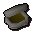
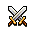

")
Anfänger-Info
Erkundung von Lumbridge | Navigation auf RuneScape | Anfängergebiete | Warnungen
Abenteuer | Fertigkeiten | Andere Spieler
Abenteuer | Fertigkeiten | Andere Spieler
Erkundung von Lumbridge

Während der Ausbildung solltet ihr RuneScape schon etwas kennenlernen, aber trotzdem ist es eine gute Idee, euch mit der Stadt Lumbridge vertraut zu machen und euch etwas zu orientieren.

Wenn ihr Fragen habt, könnt ihr über das Beratersymbol jederzeit mit Roddeck sprechen. Das Symbol ist gleich neben der Minikarte (als Fragezeichen) oder in der oberen rechten Ecke eures Zielfensters (das durch ein Wegweiser-Symbol dargestellt wird). Hier erfahrt ihr mehr über Berater.
In den Läden in Lumbridge könnt ihr auch kostenlose Gegenstände erhalten. Diese sollen euch als Vorgeschmack darauf dienen, was euch in anderen Läden erwartet. Die Anzahl dieser kostenlosen Gegenstände ist allerdings zeitlich beschränkt, aber sollte euch helfen, wenn ihr eure Angel oder eure Spitzhacke verloren habt.
Erkundung von Lumbridge
RuneScape ist eine riesige Welt, in der man sich leicht verläuft. Um euch zu orientieren, könnt ihr die praktische Weltkarte benutzen. Klickt einfach auf den Globus in der oberen rechten Ecke eures Spielfensters, um die Karte - ausgerichtet auf eure derzeitige Position - zu öffnen. Mehr über die Weltkarte erfahrt ihr hier.
An wichtigen Kreuzungen befinden sich außerdem Wegweiser, auf denen ihr erfahrt, welche Städte sich in der Nähe befinden und wie man dorthin kommt. Um einen Wegweiser zu lesen, klickt auf ihn.
Anfängergebiet

Eine ähnliche Warnung erhalten niedrigstufigere Spieler auch, wenn sie ein Verlies betreten, das nicht zum Startbereich gehört.
Warnsystem

Abenteuer
Es gibt verschiedene Stufen bei den Abenteuern in RuneScape: Abenteuer für Neulinge, für Fortgeschrittene, für Experten und für Meister.
Anfangs könnt ihr in und um Lumbridge herum einige Abenteuer absolvieren. Wir empfehlen die folgenden:
- Der Aushilfskoch
Sprecht mit dem Koch in der Küche des Schlosses von Lumbridge. Diese befindet sich im Erdgeschoss. - Der ruhelose Geist
Sprecht mit dem Priester in der Kirche gegenüber des Schlosses von Lumbridge. - Das Runenmysterium
Sprecht mit dem Herzog von Lumbridge im Schloss von Lumbridge. Man findet ihn in der ersten Etage.
Eine Liste mit allen allen Abenteuern für Anfänger findet ihr hier.
Um zu sehen, wo die Startpunkte der jeweiligen Abenteuer sind, rechtsklickt auf ein beliebiges Abenteuer in der Liste und wählt die Option 'Auf der Weltkarte anzeigen'. So erfahrt ihr auf einen Blick, wo ihr hinmüsst, um das Abenteuer zu beginnen. Rechtsklickt auf ein Abenteuer, um es als Ziel zu setzen.
Fertigkeiten
Wenn ihr in Lumbridge ankommt, werdet ihr vielleicht feststellen, dass ihr verschiedene Gegenstände benötigt, bevor ihr anfangen könnt, eure Fertigkeiten zu trainieren. Um euch an die Fertigkeiten zu gewöhnen, die ihr in RuneScape braucht, empfehlen wir, damit anzufangen, folgende Fertigkeiten zu trainieren:
Holzfällerei
 Sobald ihr in Lumbridge angekommen seid, könnt ihr damit anfangen, diese Fertigkeit zu trainieren, denn der einzige Gegenstand, den ihr benötigt, ist eine Axt, die ihr in Bobs Axtladen umsonst bekommen könnt. Diese Fertigkeit ist sehr nützlich, da ihr dadurch Holzscheite bekommt, die ihr zum Kochen, für Bögen oder Pfeile benutzen könnt. Mehr Informationen zum Holzfällen bekommt ihr unter Holzfällerei.
Sobald ihr in Lumbridge angekommen seid, könnt ihr damit anfangen, diese Fertigkeit zu trainieren, denn der einzige Gegenstand, den ihr benötigt, ist eine Axt, die ihr in Bobs Axtladen umsonst bekommen könnt. Diese Fertigkeit ist sehr nützlich, da ihr dadurch Holzscheite bekommt, die ihr zum Kochen, für Bögen oder Pfeile benutzen könnt. Mehr Informationen zum Holzfällen bekommt ihr unter Holzfällerei. Funkenschlagen
 Dies ist eine der einfachsten Fertigkeiten, alles was ihr braucht sind eine Zunderbüchse und einige Scheite. Auch die Zunderbüchse erhaltet ihr kostenlos im Gemischtwarenladen in Lumbridge. Funkenschlagen ist wichtig, wenn ihr nicht in der Nähe eines Küchenherdes seid, damit ihr Fleisch oder Fisch kochen könnt. Mehr darüber erfahrt ihr unter Funkenschlagen:
Kochen
 Auf RuneScape werdet ihr durch Nahrung geheilt, daher ist Kochen eine wichtige Fertigkeit. Aus dem Hühnerstall nordwestlich des Gemischtwarenladens von Lumbridge bekommt ihr rohes Fleisch, mit dem ihr damit anfangen könnt, diese Fertigkeit zu trainieren. Mehr Informationen über das Kochen bekommt ihr hier.
Auf RuneScape werdet ihr durch Nahrung geheilt, daher ist Kochen eine wichtige Fertigkeit. Aus dem Hühnerstall nordwestlich des Gemischtwarenladens von Lumbridge bekommt ihr rohes Fleisch, mit dem ihr damit anfangen könnt, diese Fertigkeit zu trainieren. Mehr Informationen über das Kochen bekommt ihr hier. Fischen
 Diese Fertigkeit bietet euch eine andere Möglichkeit, an Essen zu kommen, als ein Tier zu töten und sein Fleisch zu kochen. Fischen ist in RuneScape eine sehr wichtige Fertigkeit und kann in den meisten Gewässern betrieben werden. Kostenlose Werkzeuge zum Fischen erhaltet ihr im Fischereiladen in Lumbridge, nördlich des Schlosses. Um mehr Informationen über das Fischen zu erhalten, klickt hier.
Diese Fertigkeit bietet euch eine andere Möglichkeit, an Essen zu kommen, als ein Tier zu töten und sein Fleisch zu kochen. Fischen ist in RuneScape eine sehr wichtige Fertigkeit und kann in den meisten Gewässern betrieben werden. Kostenlose Werkzeuge zum Fischen erhaltet ihr im Fischereiladen in Lumbridge, nördlich des Schlosses. Um mehr Informationen über das Fischen zu erhalten, klickt hier. Bergbau und Schmieden
 Bergbau ermöglicht euch, verschiedene Materialien aus bestimmten Gesteinen abzubauen. Die Erze, die ihr aus den Gesteinen bekommt, könnt ihr zu Barren formen, und daraus nützliche Gegenstände schmieden. Diese beiden Fertigkeiten sind für Anfänger nützlich, weil ihr schon auf einer niedrigen Stufe nützliches Rüstzeug herstellen könnt. Ihr solltet euch Rüstzeug herstellen, um euch beim Training eurer Kampfstufe gegen Angriffe zu schützen. Unter Bergbau und Schmieden findet ihr weitere Informationen.
Bergbau ermöglicht euch, verschiedene Materialien aus bestimmten Gesteinen abzubauen. Die Erze, die ihr aus den Gesteinen bekommt, könnt ihr zu Barren formen, und daraus nützliche Gegenstände schmieden. Diese beiden Fertigkeiten sind für Anfänger nützlich, weil ihr schon auf einer niedrigen Stufe nützliches Rüstzeug herstellen könnt. Ihr solltet euch Rüstzeug herstellen, um euch beim Training eurer Kampfstufe gegen Angriffe zu schützen. Unter Bergbau und Schmieden findet ihr weitere Informationen. Kerkerkunde
 Ein Besuch in Daemonheim ist ein guter Weg, um sich mit den verschiedenen Fertigkeiten und dem Kampfsystem in RuneScape vertraut zu machen. Die Abenteurer reisen von überall an, um dort im Alleingang oder in Gruppen den Kerker zu erkunden und dabei Beute und Erfahrung zu gewinnen. Wenn ihr bei Komplexitätsgrad 1 beginnt und euch bis Grad 6 vorarbeitet, könnt ihr dabei langsam alle Fertigkeiten von RuneScape kennenlernen. Das Training in Daemonheim ist außerdem sicher, daher müsst ihr keine Angst vor dem Sterben oder dem Verlust wertvoller Gegenstände haben.
Ein Besuch in Daemonheim ist ein guter Weg, um sich mit den verschiedenen Fertigkeiten und dem Kampfsystem in RuneScape vertraut zu machen. Die Abenteurer reisen von überall an, um dort im Alleingang oder in Gruppen den Kerker zu erkunden und dabei Beute und Erfahrung zu gewinnen. Wenn ihr bei Komplexitätsgrad 1 beginnt und euch bis Grad 6 vorarbeitet, könnt ihr dabei langsam alle Fertigkeiten von RuneScape kennenlernen. Das Training in Daemonheim ist außerdem sicher, daher müsst ihr keine Angst vor dem Sterben oder dem Verlust wertvoller Gegenstände haben. Kampf
 Es gibt viele verschiedene Kampffertigkeiten - Angriff, Verteidigung, Lebenspunkte und Stärke. Ihr könnt beginnen, diese Fertigkeiten zu trainieren, sobald ihr eine Waffe habt. Einen Bronze-Dolch könnt ihr euch kostenlos im Gemischtwarenladen in Lumbridge abholen. Eure ersten Gegner sind vermutlich Riesenratten, Riesenspinnen und Goblins, die überall in Lumbridge herumlaufen. Je höher eure Kampfstufe ist, um so einfacher könnt ihr höherstufige Monster besiegen und um so hochwertiger sind demnach die Belohnungen, die ihr erhaltet. Mehr Informationen zum Kampf erhaltet ihr hier.
Um mehr über die Fertigkeiten zu erfahren, die ihr in RuneScape trainieren könnt, seht euch den Abschnitt über Fertigkeiten in der Spielanleitung an.
Andere Spieler
In einem Online-Rollenspiel wie RuneScape werdet ihr euch öfter mit Mitspielern unterhalten und ihr werdet bisweilen auf Hilfe von ihnen angewiesen sein, um eine Aufgabe durchführen zu können. Manche Spieler machen sich die Möglichkeit zunutze, mit anderen zu handeln und sich zu verbünden, und schaffen sich einen Kreis von Freunden, denen sie vertrauen und die sich gegenseitig im Spiel helfen. Um mehr über die Vorteile zu erfahren, die es hat, in RuneScape Freunde zu haben, lest im Abschnitt Steuerung die Artikel Eure Freunde und Handel.

Weitere Artikel in Diverse Anleitungen
|
|
|
Weiterführende Informationen Wenn euch dieser Artikel nicht weitergeholfen hat, könnt ihr in den folgenden Kapiteln der RuneScape-Webseite mehr Informationen finden:
|
|